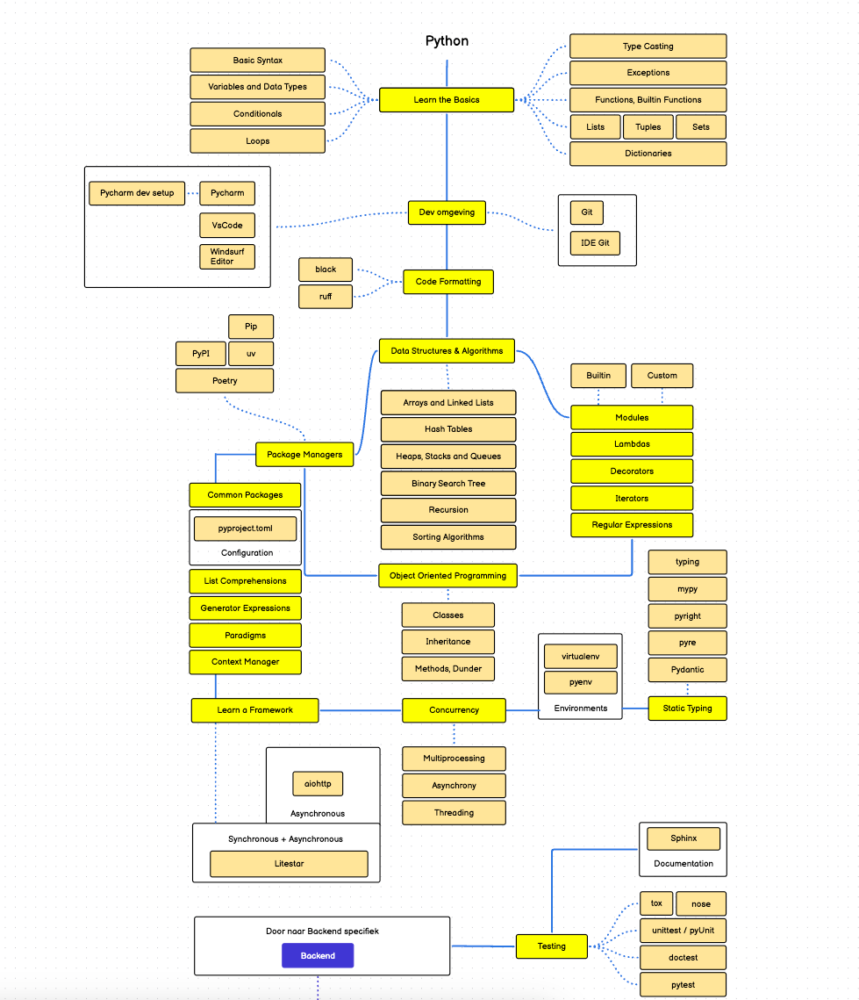

Python beginner
Topics
- overview and comparison to other programming languages
- installation
- working with the interactive Python console
- variables and basic data types
- composite types: dict, list, tuple
- help and documentation
- builtins and the standard library
- control structures
- if / else
- loops (while, for)
- functions
- code quality and linting
- debugging
roadmap
Cant edit the roadmap anymore but this is globally what we will do this year.
